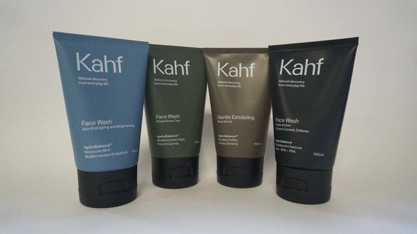

Produk Skincare KAHFProduk Skincare KAHF adalah rangkaian produk perawatan kulit yang dirancang khusus untuk menjaga kesehatan kulit Anda. Dibuat dari bahan-bahan alami berkualitas, produk ini memberikan nutrisi dan perlindungan optimal bagi kulit Anda. Keunggulan Produk Skincare KAHF
Harga: Rp 35.0000Cara Penggunaan
Dapatkan Kulit Sehat dengan Produk Skincare KAHF!Segera coba produk skincare KAHF dan rasakan manfaatnya pada kulit Anda. Dapatkan kulit yang sehat, cerah, dan terawat dengan menggunakan produk ini secara rutin. Jangan ragu untuk menghubungi kami jika Anda memiliki pertanyaan atau membutuhkan informasi lebih lanjut. Disclaimer: Hasil penggunaan produk dapat bervariasi pada setiap individu.
|